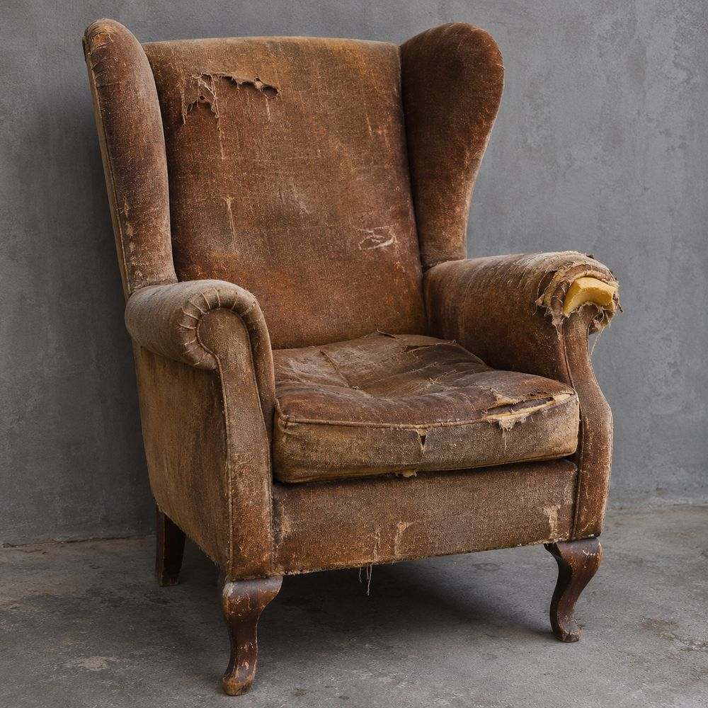
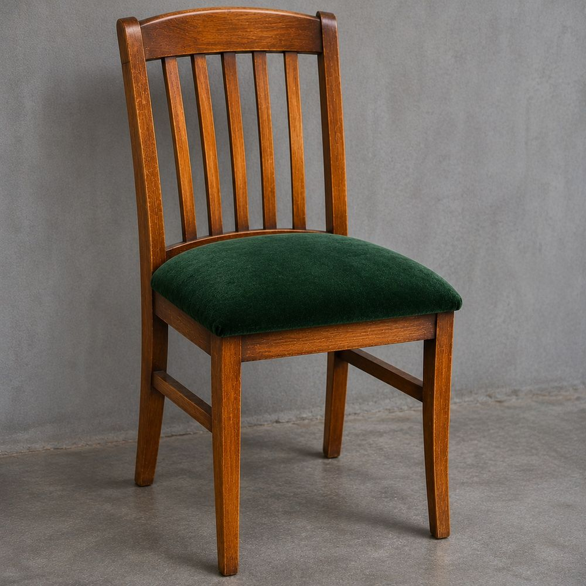
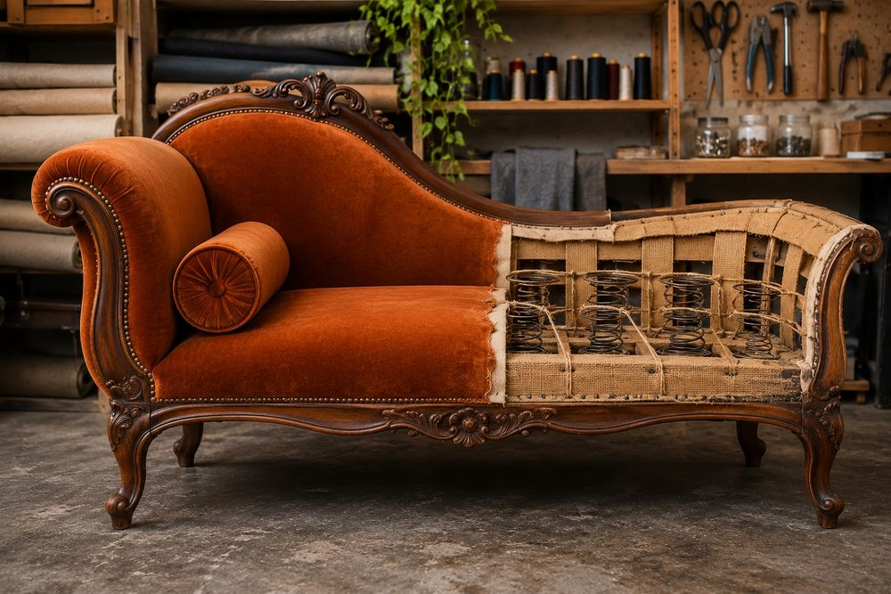

Realizacje
Przed i po
Te same meble, to samo ujęcie. Po lewej tak, jak do nas przyjechały, po prawej tak, jak wróciły do domu.

Przed Po
PoFotel uszak. Nowe pasy i sprężyny, gąbka, welur butelkowy.
 Przed
Przed
PoKrzesło z kompletu do jadalni. Nowe siedzisko, welur butelkowy, odświeżone drewno.

W pracowni
Szezlong w połowie drogi
Z lewej już obity, z prawej widać to, czego zwykle nie widać: sprężyny wiązane sznurkiem i pasy jutowe. Tak wygląda mebel w środku, zanim dostanie nową tkaninę.